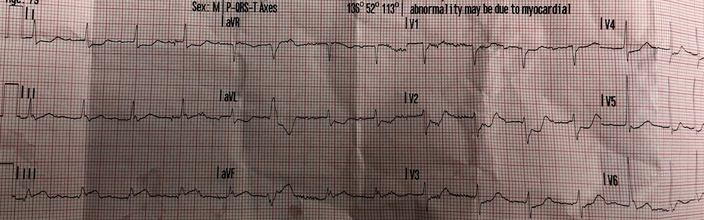
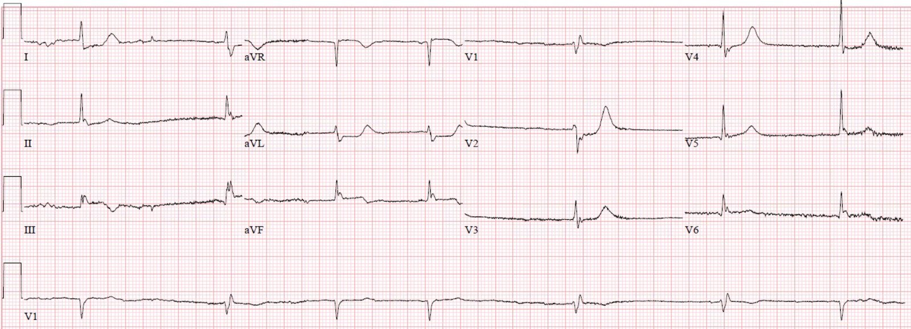
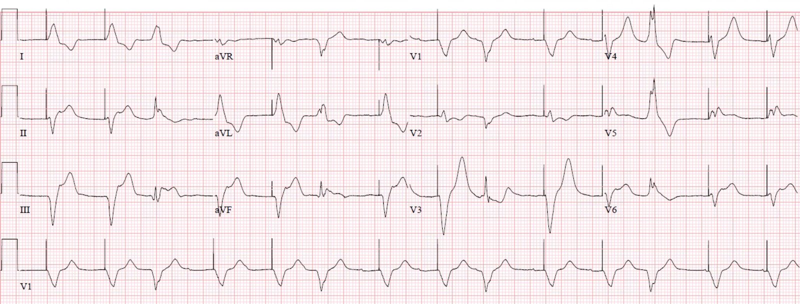
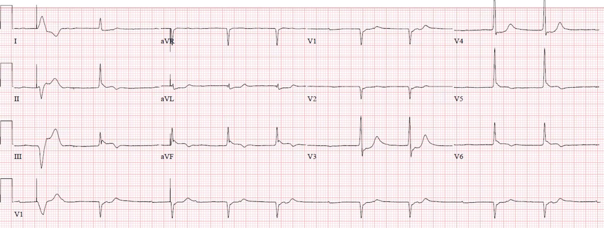
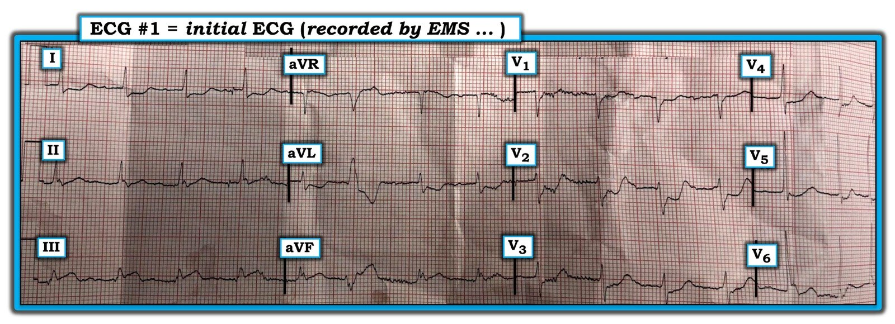
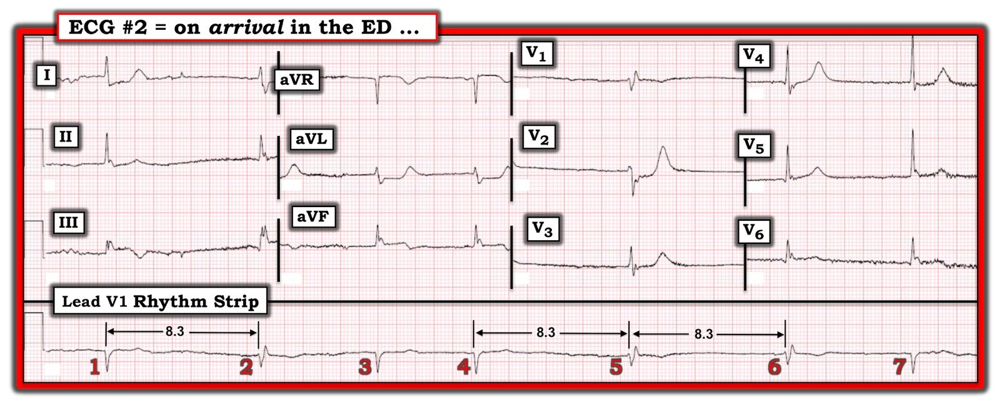
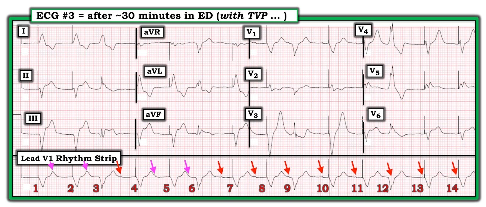
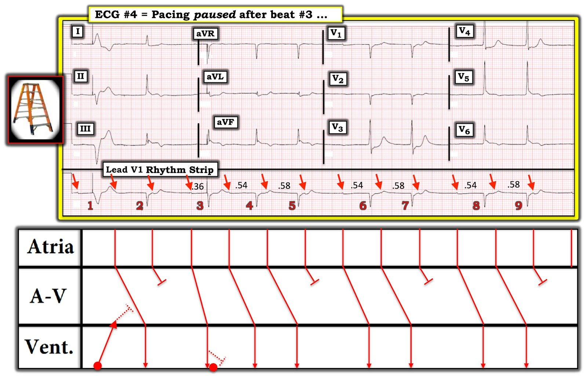

19/01/2020 — Một phụ nữ 70 mấy tuổi bị nhịp chậm và tụt huyết áp
Bản dịch tiếng Việt của bài "A woman in her 70s with bradycardia and hypotension" – Dr. Smith’s ECG Blog. Giữ nguyên toàn bộ 10 hình ảnh của bản gốc.
Gửi bởi một người ẩn danh, viết bởi Pendell Meyers
Một phụ nữ 70 mấy tuổi có tăng huyết áp (HTN) và đái tháo đường (DM) đã bị đau vùng ngực dưới / thượng vị trên từng cơn, kéo dài khoảng một tuần cho đến khi cơn đau nặng lên đột ngột, kèm vã mồ hôi và mệt lả. Gia đình gọi đội cấp cứu ngoài viện (EMS); EMS ghi nhận hạ huyết áp và ghi được điện tâm đồ này:


Đây là một OMI dưới-sau rõ ràng. Có ST chênh lên (STE) ở III và aVF nhưng không đạt tiêu chuẩn STEMI do STE ở chuyển đạo aVF không đủ. Có ST chênh xuống (STD) soi gương ở I và aVL. Có STD ở V1-V5, nhiều nhất ở V2-3, đây là dấu hiệu chẩn đoán phần tổn thương thành sau. Chất lượng bản ghi chưa hoàn hảo, nhưng tôi cho rằng đây là nhịp xoang khoảng 100 lần/phút với khoảng PR kéo dài.
Không thể xác định từ điện tâm đồ này liệu có kèm nhồi máu thất phải hay không, nhưng có một gợi ý nhồi máu thất phải (RVMI): STD ở V2 rất sâu nhưng ở V1 lại rất ít. STD ở V2 do nhồi máu thành sau có thể “kéo xuống” STE ở V1 và triệt tiêu nó.
Khi đến khoa cấp cứu (ED), bệnh nhân tụt huyết áp nặng, gần như lơ mơ và nhịp chậm. Hồi sức được tiến hành và ghi được điện tâm đồ này:


Phòng thông tim (cath lab) đã được kích hoạt. Các bác sĩ can thiệp khăng khăng rằng các điện tâm đồ không đạt tiêu chuẩn STEMI và hủy kích hoạt, nói rằng họ sẽ cân nhắc thông tim khẩn sau khi bệnh nhân được ổn định thêm.
Atropine không có đáp ứng. Bệnh nhân được dùng thuốc vận mạch và đặt miếng dán tạo nhịp qua da (nhưng mất bắt nhịp). Bệnh nhân được đặt nội khí quản và đặt máy tạo nhịp qua tĩnh mạch với bắt nhịp tốt. Bệnh nhân được dùng aspirin đường trực tràng (PR).
Siêu âm tim tại giường cho thấy rối loạn vận động thành dưới rõ ràng, máy tạo nhịp qua tĩnh mạch (TVP) đặt đúng vị trí, không có tràn dịch.
Khoảng 30 phút sau khi nhập viện, bệnh nhân có dấu hiệu sinh tồn chấp nhận được với TVP và truyền epinephrine liều thấp liên tục. Một điện tâm đồ khác được ghi trong khi tạo nhịp:


Nhóm cấp cứu một lần nữa chỉ ra bằng chứng OMI dưới-sau, lần này theo tiêu chuẩn Sgarbossa cải biên. Các bác sĩ tim mạch không quen với tiêu chuẩn này và khăng khăng rằng điện tâm đồ trong nhịp tạo nhịp không thể dùng để “tìm STEMI”. Sau một hồi trao đổi, khoa tim mạch khăng khăng rằng họ cần một điện tâm đồ ở nhịp tự thân để đánh giá theo tiêu chuẩn STEMI.
Vì vậy họ tạm ngưng TVP và ghi được điện tâm đồ này:


Nhóm cấp cứu cho rằng điện tâm đồ này đạt tiêu chuẩn STEMI, tuy nhiên các bác sĩ tim mạch cho rằng các chuyển đạo thành dưới có sóng J đáng kể tại điểm J, theo sau là STE không đạt tiêu chuẩn STEMI.
Lúc này đã khoảng 90 phút kể từ khi bệnh nhân đến viện.
Khoa tim mạch yêu cầu chụp CT sọ não trước khi thông tim mà không rõ lý do; kết quả âm tính. Troponin T lần đầu dương tính ở mức 0.06 ng/mL.
Sau đó khoa tim mạch yêu cầu truyền 2U khối hồng cầu (PRBC) vì Hgb 7.5 trước khi thông tim, và việc truyền máu đã được bắt đầu.
Trong thời gian này, huyết áp của bệnh nhân tiếp tục giảm, cần đến 4 thuốc vận mạch để duy trì huyết động.
Bệnh nhân tử vong khoảng 2.5 giờ sau khi đến viện, trước khi được thông tim.
Những điểm cần học:
Chúng ta không được để tiêu chuẩn STEMI cản trở việc nhận diện và/hoặc điều trị nhồi máu cơ tim do tắc (Occlusion MI). Chúng ta phải đặt cho bản thân và các bác sĩ hội chẩn của mình một tiêu chuẩn cao hơn để bảo vệ bệnh nhân.
Hãy dùng tiêu chuẩn Sgarbossa cải biên để phát hiện OMI trong bối cảnh nhịp tạo nhịp thất.
Hãy cân nhắc thuốc tiêu sợi huyết cho OMI khi không thể làm PCI.

===================================
BÌNH LUẬN CỦA TÔI, bởi KEN GRAUER, MD (19/1/2020):
===================================
Có RẤT NHIỀU điều để bàn về loạt bản ghi trong ca bệnh đáng tiếc này. Tôi sẽ giới hạn bình luận của mình vào việc củng cố các khái niệm Dr. Meyers đã nêu — và tập trung thêm vào việc đọc nhịp.
- Với sự tôn trọng, tôi phải không đồng ý với nhận xét của Dr. Meyers rằng việc đọc nhịp của điện tâm đồ #4 là “không quan trọng về mặt lâm sàng”. Ngược lại (như tôi sẽ nhấn mạnh dưới đây) — đọc nhịp chính xác hơn lẽ ra đã cung cấp thêm một cách nữa có thể (lẽ ra phải) thuyết phục nhóm tim mạch rằng bệnh nhân này đang tiến triển một OMI cấp ngay trước mắt họ.
- Để cho rõ — tôi sẽ trình bày lại 4 điện tâm đồ trong ca này.
- ĐIỂM THEN CHỐT (PEARL) — Như tôi đã nói nhiều lần trước đây, dùng Compa đo (calipers) là DỄ, và nó ngay lập tức khiến bạn “giỏi hơn”. Tôi HOÀN TOÀN KHÔNG biết nhịp nhĩ trong điện tâm đồ #3 và #4 có đều hay không — cho đến khi tôi đo các khoảng P-P bằng compa. Việc này không làm chậm việc đọc của tôi — ngược lại, dùng compa giúp tôi đánh giá chính xác nhịp nhĩ nền nhanh hơn nhiều so với cố đoán xem cái gì đều hay không đều.
LƯU Ý: Một số bình luận của tôi dưới đây về việc đọc nhịp khá phức tạp ( = nâng cao). Nếu bạn không theo kịp hết cũng không sao — vì chính các khái niệm tổng thể mới là điều quan trọng để nâng cao và thấu hiểu cách diễn giải lâm sàng những điểm cốt yếu trong ca này.


Các điểm lâm sàng về Điện tâm đồ #1:
- Tôi không hiểu vì sao nhóm tim mạch lại “mắc kẹt” vào yêu cầu “tiêu chuẩn STEMI” trong ca này. Người phụ nữ 70 mấy tuổi này đã có triệu chứng ~1 tuần trước khi nhập viện. Dù bệnh sử bổ sung về việc triệu chứng “nặng lên đột ngột” có thể chỉ ra thời điểm tắc cấp — thì do bệnh nhân đã có triệu chứng nhiều ngày trước khi gọi EMS — nhóm tim mạch rõ ràng lẽ ra phải cân nhắc khả năng biến cố ban đầu đã xảy ra trước ngày nhập viện!
- Bệnh nhân bị tụt huyết áp đi kèm với điện tâm đồ ban đầu ( = Điện tâm đồ #1). Bất kể “tiêu chuẩn STEMI” có (hay không) được đáp ứng một cách chặt chẽ — một biến cố cấp gần đây ở một bệnh nhân có triệu chứng rầm rộ (người phụ nữ này tụt huyết áp nặng, kèm suy giảm ý thức) tự bản thân nó đã là chỉ định rõ ràng cho thông tim chẩn đoán/điều trị ngay lập tức.
- Như Dr. Meyers đã nêu — điện tâm đồ #1 cho thấy một OMI dưới-sau rõ ràng. KHÔNG có gì phải nghi ngờ rằng dù chỉ có 1mm ST chênh lên ở các chuyển đạo III và aVF — đây là những thay đổi cấp tính, vì có sóng ST-T tối cấp ở cả hai chuyển đạo III và aVF + hình soi gương ngược chiều là sóng ST-T chênh xuống soi gương (reciprocal) ở chuyển đạo aVL (được củng cố thêm bởi ST chênh xuống dạng bậc thềm phẳng 1 mm ở chuyển đạo I).
- Trong số các lý do có thể giải thích vì sao không thấy ST chênh lên quá 1 mm ở các chuyển đạo III và aVF là: i) QRS rất nhỏ ở các chuyển đạo này (như thường gặp trong nhồi máu thành dưới) — nên xét theo tỷ lệ phần trăm, mức ST chênh lên tại điểm J thực ra >25% biên độ sóng R ở các chuyển đạo III và aVF; và, ii) Triệu chứng của bệnh nhân này đã kéo dài ~1 tuần — nên một phần ST chênh lên có thể đã giảm bớt vào thời điểm này của quá trình bệnh.
- Như Dr. Meyers đã nêu — có ST chênh xuống rất sâu ở các chuyển đạo trước, sâu gần 3 mm ở chuyển đạo V2. Nhiều chuyên gia xem hình dạng ST chênh xuống này ở một hoặc nhiều chuyển đạo trước là hình “soi gương” của những gì đang diễn ra ở thành sau thất trái — điều này (trên thực tế) lẽ ra phải được xem là mức lệch ST cấp quá đủ để đáp ứng “tiêu chuẩn STEMI”.
- Ý của Dr. Meyers về khả năng kèm tổn thương thất phải cấp (vì ST chênh xuống ở chuyển đạo V1 chỉ ở mức tối thiểu, trong khi ST chênh xuống rõ ở V2) — là cực kỳ liên quan ở bệnh nhân tụt huyết áp nặng này — vì nhu cầu bù dịch là một phần quan trọng của hồi sức. Các chuyển đạo ngực bên phải lẽ ra đã cho câu trả lời chắc chắn hơn về tổn thương thất phải cấp đi kèm.
- Dù không nằm trong “tiêu chuẩn STEMI thành văn” — ST chênh lên tại điểm J 2 mm bất ngờ của nhát PVC ở chuyển đạo aVF trên điện tâm đồ #1 cung cấp thêm bằng chứng về OMI cấp gần đây (và/hoặc đang diễn ra).
- Đáng tiếc — chất lượng của điện tâm đồ #1 + nhiễu đường nền khiến không thể đọc nhịp chính xác. Dù vậy, tôi đồng ý với Dr. Meyers rằng nhiều khả năng đây là nhịp xoang ~95/phút + blốc AV độ 1 — dù chúng ta cần một dải nhịp chất lượng tốt hơn để biết chắc chắn nhịp là gì. Dù vậy — Hãy nhớ rằng chúng ta nghi ngờ có blốc AV độ 1 (điều này trở nên quan trọng khi đánh giá nhịp ở các bản ghi tiếp theo!).


Các điểm lâm sàng về Điện tâm đồ #2: Tôi thấy nhịp trong điện tâm đồ #2 đặc biệt thú vị:
- Tôi đồng ý với Dr. Meyers rằng nhiều khả năng có AFib nền trong điện tâm đồ #2 — vì các khoảng R-R đứng trước các nhát #3, 4 và 7 đều khác nhau — và chúng ta không thấy dấu hiệu rõ ràng của sóng P ở bất kỳ chuyển đạo nào trong 12 chuyển đạo trên bản ghi này.
- Dù vậy — hãy lưu ý rằng hình dạng QRS thay đổi trên dải nhịp V1 dài. Dùng compa đo cho phép bạn ngay lập tức đo các khoảng R-R — và không phải ngẫu nhiên mà khoảng R-R đứng trước mỗi nhát trong 3 nhát có hình dạng blốc nhánh phải không hoàn toàn (RBBB không hoàn toàn) đều giống hệt nhau ( = dài 8.3 ô lớn).
- Điều này khẳng định rằng 3 nhát này ( = các nhát # 2, 5 và 6) là nhát thoát. Vì phức bộ QRS của 3 nhát này chỉ hơi giãn rộng, với sóng lệch ban đầu rất giống nhau biểu hiện hình dạng RBBB không hoàn toàn/LPHB (hình dạng LPHB thấy ở nhát #2 trên các chuyển đạo I,II,III ghi đồng thời) — vị trí của ổ thoát này nằm trong hệ thống dẫn truyền, nhiều khả năng xuất phát từ phân nhánh trái trước.
- Ngoài nhịp chậm rõ rệt — liệu có thể có blốc AV mức độ cao? Các rối loạn dẫn truyền từng lúc (như RBBB không hoàn toàn/LPHB thấy ở đây) — thường gặp nhất khi tần số tim tăng nhanh — vậy mà ở đây chúng lại xuất hiện khi nhịp chậm tăng lên — điều này khiến tôi nghi ngờ có sự tiến triển của blốc AV ở bệnh nhân đang có nhồi máu thành dưới tiếp diễn và tiến triển này. Nhồi máu cơ tim thành dưới cấp nổi tiếng vì hay đi kèm với sự tiến triển từng bậc từ blốc AV độ 1 — sang blốc AV độ 2, Mobitz I — sang blốc AV độ 3 — và có lẽ chúng ta đang thấy điều này?


Các điểm lâm sàng về Điện tâm đồ #3:
- Như Dr. Meyers đã nêu — điện tâm đồ #3 cho thấy nhịp tạo nhịp với nhịp ba thất (cứ nhát thứ 3 là một PVC).
- Dùng compa đo cho phép bạn xác lập một nhịp nhĩ nền đều! Tôi đã đánh dấu bằng các mũi tên ĐỎ trên điện tâm đồ #3 những sóng P biên độ thấp mà dù vậy tôi vẫn chắc chắn. Dò tiếp số đo P-P này bằng compa cho phép phát hiện những sóng P còn lại có khả năng có mặt (các mũi tên HỒNG).
- Tôi nghi ngờ cơ chế của nhịp này không phải là nhịp xoang — vì thực sự chúng ta không thấy hoạt động nhĩ ở chuyển đạo II (do đó, nhiều khả năng là nhịp nhĩ lạc chỗ).
- Dù khó chẩn đoán blốc AV nền đồng thời khi có tạo nhịp thất đều trên điện tâm đồ #3 — việc khoảng PR liên tục thay đổi, nhưng không có bất kỳ bằng chứng nào của dẫn truyền, gợi ý có một mức blốc AV nền nào đó (có lẽ là blốc độ 2 mức độ cao).


Các điểm lâm sàng về Điện tâm đồ #4:
- NẾU bạn còn hoài nghi về nhận định của tôi rằng có một nhịp nhĩ nền đều trên điện tâm đồ #3 — thì xem lại điện tâm đồ #4 sẽ xóa tan mọi hoài nghi. KHÔNG thể nghi ngờ rằng hoạt động nhĩ đều (dù không phải nhịp xoang) hiện rõ trên điện tâm đồ #4 (các mũi tên ĐỎ).
- Cũng KHÔNG thể nghi ngờ rằng có blốc AV độ 2, Mobitz loại I (tức là Wenckebach AV) trên điện tâm đồ #4. Có nhịp theo nhóm (group beating) — với khoảng R-R giữa các nhát #6-7 và #8-9 giống hệt nhau — và các khoảng R-R đứng trước đó (giữa các nhát #5-6 và giữa #7-8) cũng giống hệt nhau. Các khoảng PR đứng trước các nhát #4, 6 và 8 đều bằng nhau ( = 0.54 giây) — với các khoảng PR giống hệt nhau ở nhát thứ 2 của mỗi nhóm này ( = 0.58 giây). KHÔNG thể nào đây là ngẫu nhiên!
- LƯU Ý: Có hai gai tạo nhịp trên điện tâm đồ #4 — và điều này thiết lập lại một số mối liên hệ của khoảng PR. Nhát #1 là nhát tạo nhịp (Lưu ý phức bộ QRS rất rộng và trông khác hẳn). Chúng ta cũng thấy một gai tạo nhịp ngay trước nhát #3 — nhưng vì phức bộ QRS của nhát #3 trông giống hệt mọi nhát khác trên bản ghi này — tôi cho rằng nhát #3 được dẫn truyền với khoảng PR = 0.36 giây.
ĐIỀU CỐT LÕI: Dù một số chi tiết về nhịp trên điện tâm đồ #4 chưa thật chắc chắn — KHÔNG thể nghi ngờ rằng có blốc AV độ 2, Mobitz loại I trên điện tâm đồ #4 — ở người phụ nữ 70 mấy tuổi này với ~1 tuần triệu chứng (có đợt nặng lên gần đây) + bằng chứng rõ ràng của OMI cấp đang diễn ra ở thành dưới–sau (có lẽ cả thất phải).
- Nhận diện các rối loạn nhịp trong ca này là có ý nghĩa (theo ý kiến của tôi), vì diễn tiến từ những gì có vẻ là blốc AV độ 1 — rồi blốc AV độ 2 mức độ cao — rồi bằng chứng rõ ràng của Mobitz I — là rất đặc trưng cho các rối loạn dẫn truyền AV gặp trong OMI thành dưới đang tiến triển, đến mức cung cấp thêm sự khẳng định rằng đã có một biến cố tim cấp gần đây mà vẫn còn đang diễn ra.
- THÚ NHẬN: Tôi không hiểu vì sao nhóm tim mạch tham gia ca này lại từ chối thông tim cho bệnh nhân có triệu chứng nặng nề này.
- Tôi hy vọng nhóm tim mạch liên quan sẽ nhận được phản hồi …